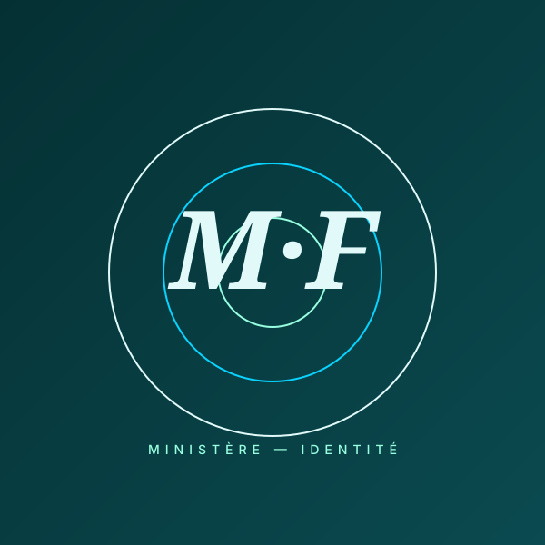
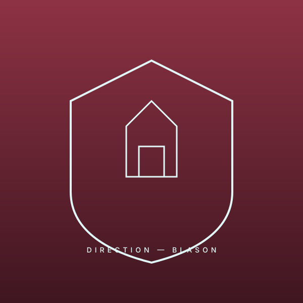
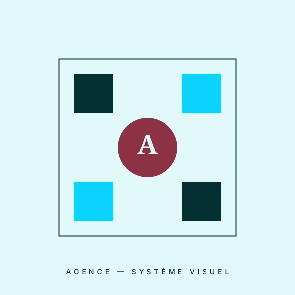
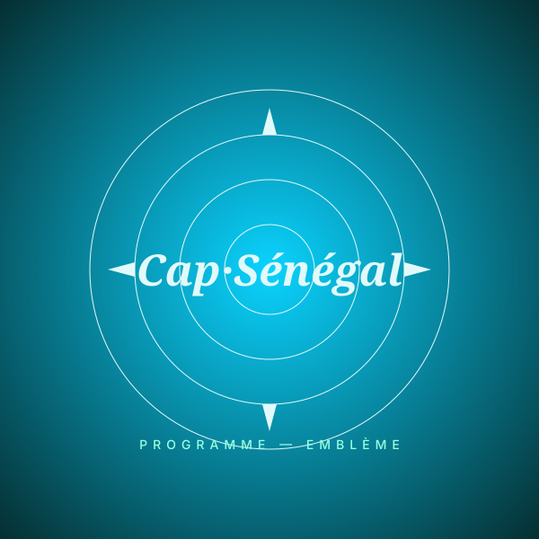

L'identité comme preuve.
TAct H conçoit des identités visuelles pour institutions, administrations et organisations qui exigent du sens et du soin.
Concevoir un emblème, c'est écrire une institution en un seul regard.
01 Un trait juste.
Aucune décoration vaine.
02 Une forme qui dure.
Au-delà des modes.
03 Un sens immédiat.
Lisible, mémorable, officiel.
Armée de l'Air du Sénégal
Refonte de l'emblème officiel.
Du symbole hérité à la version contemporaine.
 Après
Après
 Avant
Avant
Glissez pour révéler.
Préserver l'autorité du symbole tout en affirmant une identité
résolument moderne, technique et nationale.
Emblème officiel · déclinaisons protocolaires · charte couleur · grilles d'usage.
— le détail comme signature.

Inspection des Services de Sécurité.
Une institution rattachée au ministère de l'Intérieur nous a confié la création de son nouvel emblème officiel.
- — Adopté en pins protocolaire
- — Présent sur les uniformes
- — Apposé sur les documents officiels
Une marque de confiance institutionnelle.
D'autres réalisations.




Pour ceux qui doivent être reconnus.
Confiez-nous votre identité.
Sur invitation et recommandation.
Réponse sous 48h.